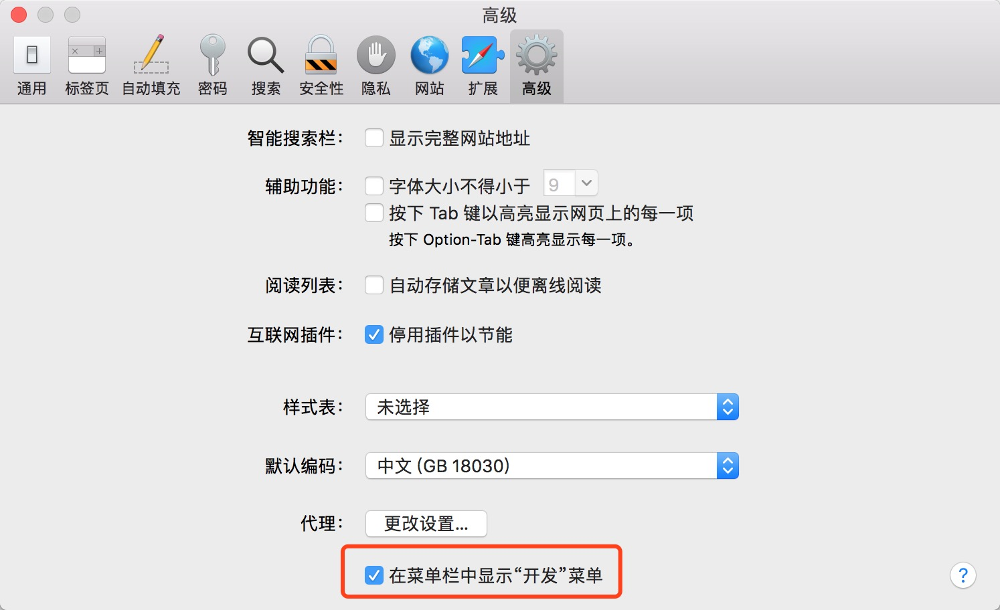
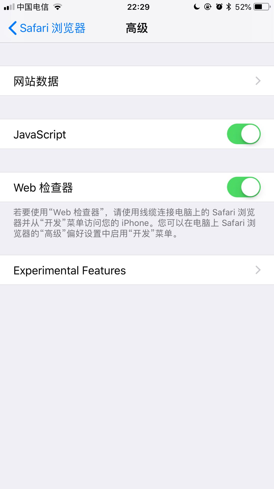
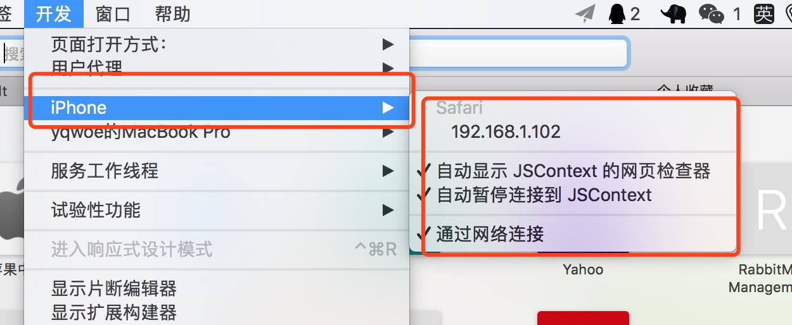
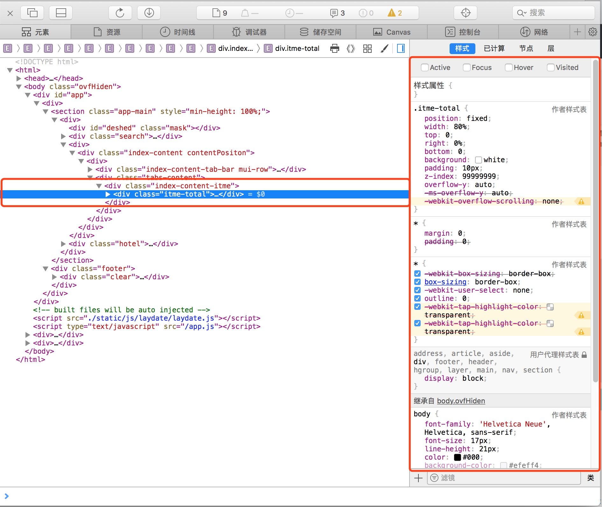

我的开发环境：Macos 、iphone,手机端页面使用 vue、scss。本次出现的问题是一个 css 样式在 iphone 手机端无法正常显示。
大概是这样：
选中的区域无法正常显示。
准备调试环境:
1.打开 sifari 的开发模式。

2.手机 sifari 打开调试模式

3.手机连接电脑

勾选上图的 ip 地址自动会弹出开发者窗口。接下来你就可以尽情的撒野了。
正经话题，我是如何找到问题并解决的。
调试窗口大概长这样，找到你要排错的 div 选中，然后，一个个勾选右侧样式，看是否存在冲突或失效的样式。

4.最后锁定
body { |
-webkit-overflow-scrolling 属性控制元素在移动设备上是否使用滚动回弹效果.
-
auto: 使用普通滚动, 当手指从触摸屏上移开，滚动会立即停止。
-
touch: 使用具有回弹效果的滚动, 当手指从触摸屏上移开，内容会继续保持一段时间的滚动效果。继续滚动的速度和持续的时间和滚动手势的强烈程度成正比。同时也会创建一个新的堆栈上下文。
最常见的例子就是，
-
在 safari 上，使用了-webkit-overflow-scrolling:touch 之后，页面偶尔会卡住不动。
-
在 safari 上，点击其他区域，再在滚动区域滑动，滚动条无法滚动的 bug。
-
通过动态添加内容撑开容器，结果根本不能滑动的 bug。
-
最终无得解决方法是改成 auto，我还没有找到更完美解决的办法。
网上有很多关于 -webkit-overflow-scrolling + ios 的问题，有兴趣的可以研究一下。不过我不建议研究，一研究估计小半年就过去了，也没有答案